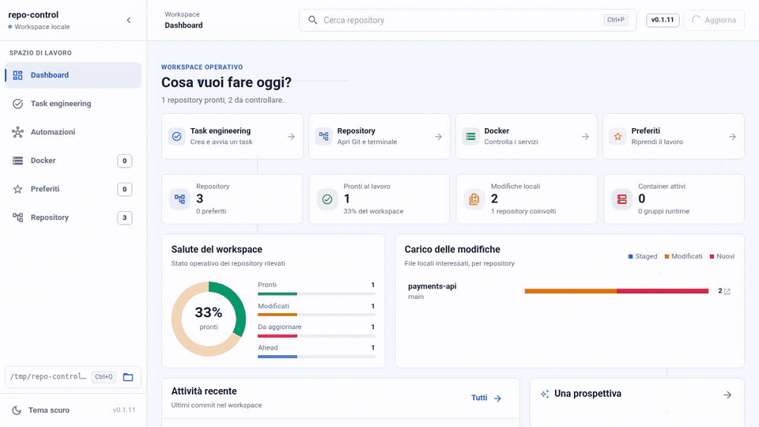
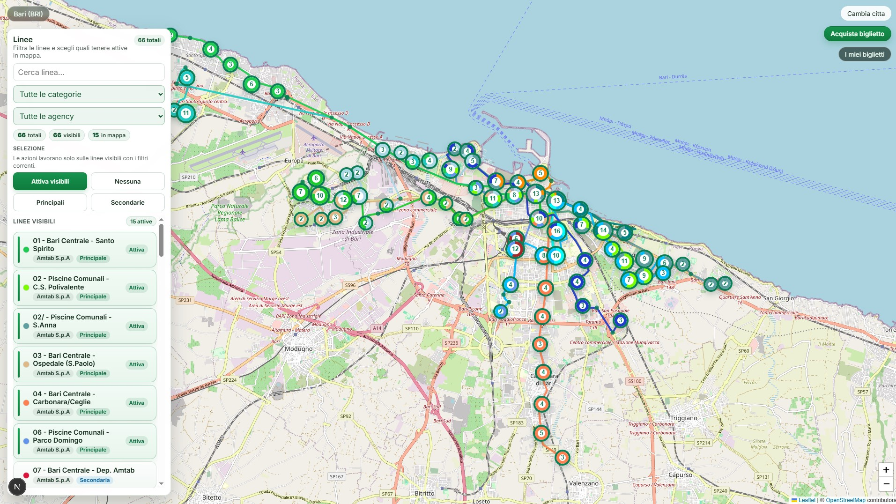
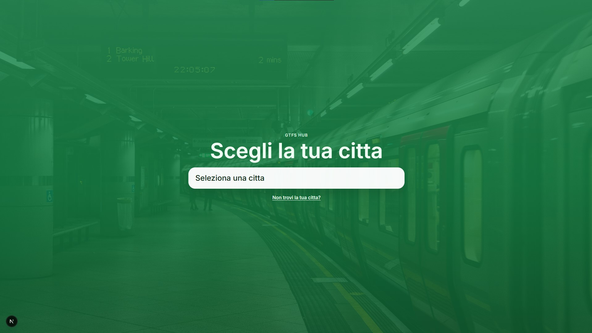
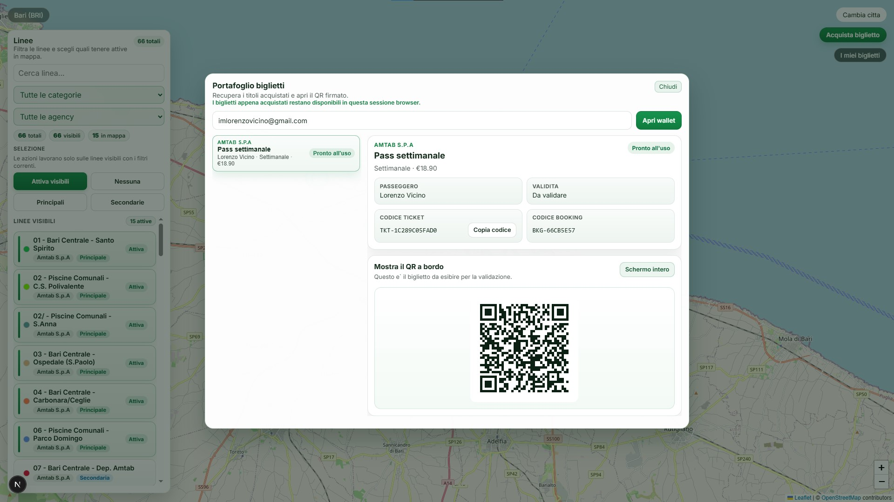

Oggi
Software Engineer
Macnil GT Alarm · GTFleet 365
Lavoro su un prodotto per la gestione delle flotte. È il contesto in cui metto insieme lavoro quotidiano sul codice, manutenzione e problemi reali degli utenti.
Gravina in Puglia · Italia
Sviluppatore software.
Sono Lorenzo. Lavoro sul software, un po' davanti e un po' dietro: interfacce, API, dati e gli strumenti che servono per tenere insieme tutto.
Questo sito non vuole essere una vetrina perfetta. È solo un posto semplice in cui raccolgo quello che faccio, quello che ho studiato e alcune cose che sto ancora imparando.
01 / Chi sono
Vivo a Gravina in Puglia e oggi lavoro come software engineer in Macnil GT Alarm, sul prodotto GTFleet 365.
Ho studiato Informatica per il Digital Business, classe L-31. Mi interessano sia il frontend sia il backend perché mi piace seguire un problema fino in fondo, non soltanto una sua parte.
Non cerco la soluzione più sorprendente. Cerco quella che riesco a capire, spiegare e mantenere anche dopo un po' di tempo. Fuori dal lavoro corro, gioco a tennis e continuo a leggere di architettura software.
02 / Percorso
Oggi
Macnil GT Alarm · GTFleet 365
Lavoro su un prodotto per la gestione delle flotte. È il contesto in cui metto insieme lavoro quotidiano sul codice, manutenzione e problemi reali degli utenti.
Formazione
Laurea triennale · Classe L-31
Un percorso tra informatica e impresa. La tesi è diventata GTFS Multicity, il progetto sul trasporto pubblico che trovi più sotto.
03 / Strumenti
Non sono etichette né una classifica. Sono semplicemente gli strumenti con cui lavoro più spesso.
04 / Progetti
Non sono casi studio. Sono progetti nati da un problema che avevo o da qualcosa che volevo capire meglio.
Progetto 01
È nato da un problema molto pratico: lavorando su più repository, volevo un posto unico per vedere cosa fosse pulito, modificato, avanti o indietro e per eseguire alcune operazioni senza perdere il contesto.
Resta sulla macchina locale. Dentro ci sono Git, terminale, Docker e alcune automazioni visuali. È ancora in sviluppo e cambia mentre lo uso.
TypeScript · React · Fastify · Docker

Progetto 02
È il progetto della mia tesi. Prova a tenere insieme i dati del trasporto pubblico di più città: orari, itinerari con cambi, acquisto del biglietto e validazione tramite QR firmato.
Mi ha costretto a ragionare sul modello dati, sulle API e sull'interfaccia nello stesso momento. Anche questo è ancora aperto e ha diverse cose da sistemare.
Next.js · PostgreSQL · Docker · GTFS



05 / Contatti